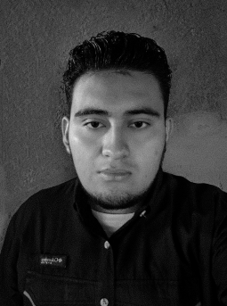

¡Hola! Soy estudiante de Diseño Gráfico en UNASA. Me apasiona la ilustración digital. Me gusta conocer y probar software diferentes y conocer las diferentes herramientas que ofrecen a la hora de hacer y crear diseños ya que son una oportunidad para crear cosas innovadoras y funcionales.
Además de la ilustración digital, me interesa mucho el mundo del modelado y animación 3D. Antes pensaba que programar era muy difícil para mi, pero ahora estoy descubriendo cómo hacer mis propias páginas web usando HTML y creo que me sera muy útil para complementar mi portafolio.